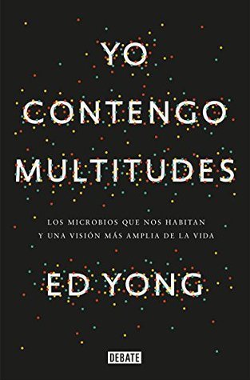

Yo contengo multitudes: Los microbios que nos habitan y una mayor visión de la vida
Reseña por Jorge I. Zuluaga

Ver reseña en GoodReads (necesita cuenta)
¡Somos ecosistemas complejos! Más parecidos a una selva que a una fábrica ensambladora de moléculas llena de Oompa Loompas celulares. Este es un hecho que hay que empezar a abrazar y que puede abrirnos las puertas a un entendimiento renovado y poderoso de la salud y la enfermedad. Este libro es un viaje de descubrimiento de esa nueva realidad.
Aunque durante la mayor parte de la historia de la ciencia y la medicina moderna (al menos desde que descubrimos en los 1600 que había un mundo de vida microscópica), asociamos las bacterias, las amebas, los virus, los hongos y otros microbios con organismos patógenos (que producen enfermedad), enemigos invisibles de los que hay que deshacerse para sobrevivir, la microbiología ha revelado en las últimas décadas lo equivocado que puede llegar a ser ese arraigado "prejuicio microbiano". No se trata, naturalmente, de negar la existencia de enfermedades causadas por microorganismos (estamos viviendo una pandemia terrible; ¡estaríamos locos si lo hiciéramos!), pero debemos reconocer, porque así nos lo está mostrando la ciencia, que la inmensa mayoría de esos organismos y partículas biológicas (incluyendo un "trillón" de virus) que nos habitan y que habitan el cuerpo de todos los animales y plantas de la Tierra (vida macroscópica) no solo es inofensiva, sino también indispensable para la existencia de vida en el planeta.
Ese es el tema central de "Yo contengo multitudes".
En el estilo muy característico de Ed Yong, diseñador gráfico de formación convertido en un reconocido divulgador de la ciencia y autor de artículos en los más importantes medios de comunicación científica del mundo, realizamos un viaje por los distintos aspectos de esta "nueva era" de la microbiología, en la que el mundo no solo está habitado por microorganismos que viven sus vidas sin ser percibidos por los gigantescos organismos multicelulares que tanto apreciamos (plantas y animales, incluyéndonos, por supuesto), dañando aquí y allá a esos organismos que no los perciben, sino que se convierte en una compleja red de relaciones entre microbios y macrobios, simbiosis en las que todos se benefician.
El mundo no está contaminado por microorganismos: el mundo es una selva de intrincadas relaciones biológicas que incluyen a los microorganismos. Y como sucede con las selvas macroscópicas, sin esas selvas microscópicas la vida en la Tierra tampoco sería viable.
El libro está soportado en una extensa evidencia científica, que se nota no solo en el hecho de que la sección de notas y bibliografía cubre alrededor de unas 100 páginas (aproximadamente un 25 % de la extensión del libro), sino en la cantidad de big names de la nueva microbiología que entrevista y cita el autor. Como buena obra de divulgación, entretenida y rigurosa, "Yo contengo multitudes" se lee más como un resumen para transeúntes de varias décadas de investigación científica que como una simple colección de impresiones y datos curiosos seleccionados (¡aunque el libro también está lleno de ellos!).
Viroma, microbioma, holobionte, hologenoma, simbionte y endosimbiosis son algunas palabras de un nuevo vocabulario sobre la vida en la que los microorganismos pasan a jugar un papel, si no central, al menos indispensable para la supervivencia.
No le pongo 5 estrellas por considerar que puede volverse muy técnico en algunos apartes. Yo lo disfruté de pasta a pasta, pero también debo reconocer que otros podrían no encontrar todo el libro tan entretenido y sencillo como esperaban (aclaro que yo tampoco encontré esos apartes entretenidos y sencillos; ¡es solo que soy muy nerd!).
Como siempre, me encanta coleccionar datos curiosos y publicarlos en redes sociales. Son como una extensión de estas reseñas que, como he repetido en tantas otras anteriores, son un mensaje a mi yo futuro que olvidará todos los libros que leyó alguna vez. En este hilo en Twitter, he recogido una selección de los que consideré los más impresionantes datos, hechos curiosos y citas inolvidables de "Yo contengo multitudes".
Este libro es un viaje de redescubrimiento de uno mismo. No dejen de hacer el viaje.